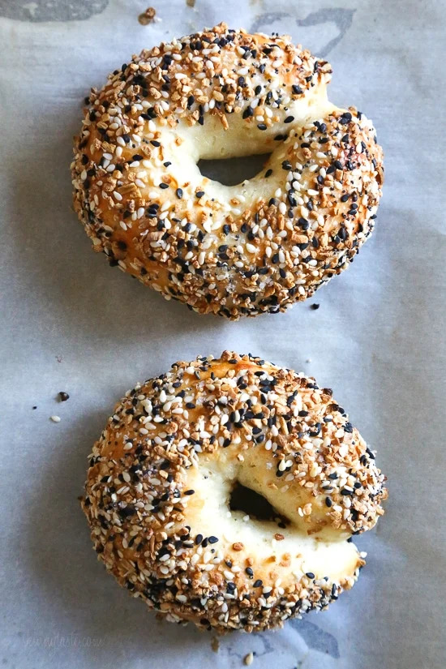

Breakfast Bagel Sandwich

Description
Easy homemade bagel recipe from scratch, made in the air-fryer!
Ingredients
For Bagels
- 1 c flour
- 2 tsp baking powder
- 3/4 tsp salt
- 1 c plain Greek yogurt
- 1 egg, beaten
- "Everything But The Bagel" seasoning
For Sandwich
- Eggs, cooked over-easy
- Bacon
- Kraft Singles American Cheese
Steps
- Combine flour, baking powder and salt. Whisk in bowl.
- Add yogurt, mix with fork until well combined.
- Lightly dust flour on work surface. Knead the dough until tacky, ~20 turns.
- Divide into 4 equal balls. Roll into 3/4-inch thick ropes, join ends to form bagel.
- Brush with egg wash, add seasoning to both sides.
- Air fry @ 280 for 15 minutes or until golden.
- Slice, top with egg, bacon and cheese
Return to home